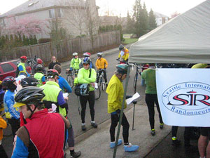
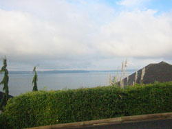
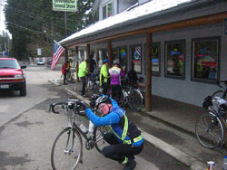
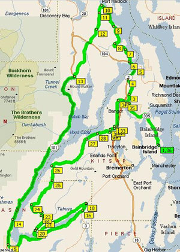
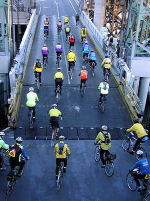
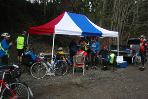
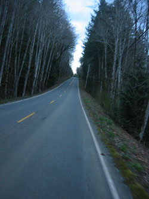

Volume 11 Issue 3 - April 2006
Ride Summary: Spring 200k
Ride Summary: Spring 300k
Ride Report: Paul Johnson's 200k
Ride Report: The Day of Vanishing Riders
NOTE: Please send any content for the newsletter to Patrick Gray
- The annual Fleche Northwest is the weekend of April 8-9, destination Port Townsend.
- Northwest Crank is April 28 - May 1 in Wenatchee.
- SIR's Spring 400k will be the weekend of May 13-14, starting in Bremerton and heading to the coast.
- If you empty that bottle of water, Gatorade or bag of chips left behind at a control, do the right thing and toss the packaging into a garbage can.
Jan Heine
It was a wonderful day, a tad chilly, but dry. A few snowflakes near Mount Rainier, but nothing that stuck. The new course took in dramatic views of the Puget Sound and of the harbor and pulp mills of Tacoma, plus bucolic riding in the Green River valley. That, added with a few nice rolling hills, brought rave reviews from most finishers.Overall, it was a great success, with what must be close to a record number of participants - and finishers (96.7 % finished the ride)!
Number of starters 91 (including 5 in the pre-ride)
Number of finishers 88
Number of DNF 3 -- apparently mostly due to fatigue
Jim Sprague
Thanks for everyone who turned out Saturday. Here are the quick numbers, results soon.Number of starters: 62
Number of finishers: 57
Number of DNF: 5 -- 2 physical, 1 mechanical, 1 over time limit, 1 planned
Paul Johnson
Hi all,
 Riders signing in at the start
Photo: Patrick Gray
The March issue of the SIR newsletter has been posted -- I look forward to receiving a flood of ride reports after the 200k! -PatrickWhen I received this note it gave me a shudder; "flood," and "ride report," and "200K" can't help but conjure up memories I'd rather not recall.
  The Saltwater and the Greenwater
Photos: Patrick GraySo, imagine my mind set when I went out to put my bike up on the car rack at oh-dark-thirty only to find it snowing! These were not those delicate white flakes drifting daintily from the sky. This stuff was coming down straight and sloppy. Admittedly only a couple degrees from rain, but rain does not pile up on the windshield.
When I picked up Brian I let drop that I was willing to drive up to Greg's, but if it was going to be white or sloppy out I was not interested in risking a fall. Ever the optimist (and computer whiz), Brian, had just checked the 'doppler' and it appeared that the farther north we went the nicer it was supposed to be. We had 65 miles ahead of us to test that prediction.
By the time we got to Greg's it was dry pavement and overcast, by local standards a pretty decent day. A week earlier I was in Southern Louisiana and the temps were in the 70's and 80's. Oh well, I was home and happy to be so.
It was a great new course. I am still puzzled that we could go from salt water to Greenwater and back to Greg's and still have it be 200K. My suspicious side would normally want to check this out, but my biologic detectors (quads) indicate that 200K seems about right. The ride went well and I felt pretty good the next day. For me this is a more accurate indicator of my current level of fitness than how I feel on the 'day of.' I have not been on a bike in two months so did not know what to expect.
Man what a big, diverse club this has become! It was great to see so many riders, and to catch up with acquaintances old and new. Everyone has their own riding style, but for me, it is always pleasant to have other riders around and I got that in spades on this event, thanks to all of you who pulled me around the course!
The Spring 200K is one of my favorite SIR traditions. Hats off to Greg and his family for once again opening their home to all of us and providing great hospitality and wonderful post ride fare, I especially liked the chili and rice! I have recently developed a real taste for red beans and rice, and gumbo, and crawfish jambalaya, and shrimp etufeil .but I'm working on getting over it.
Let's hope the rest of the spring series goes as well!
Back to Top
Jon Muellner
Previous experience has taught me that this ride can really be a battle. Memories of torrential rain and fixed gears; cadence a bit too high on the ascents and far too low on the descents... so this time, I opt for a single speed. Three times I've ridden this route, one geared, one fixed and now one SS. I feel like this is the magic balance.
 The Route of the 300k
From MS Streets and TripsThe day starts fine as I cruise in my orange VW bus "Jerry" down to the start. Thinking I'm a smart guy, I find that the free parking that used to exist in Winslow has been taken over by gawd-awful developments of every sort. I resort to parking right at the ferry terminal and have to pay $15 for over 12 hours of parking because I don't have any one dollar bills. Well, good thing I bring most of my own food.
I get there early enough to get dressed and decide to go lighter this time as the weather is looking better every minute. The sunrise was glorious and I've already scoped out the route from Hadlock to Bainbridge on the commute. Wind is calm over the Canal, so things are looking up.
A huge stream of reflective, fendered, rain-jacket-wearing riders comes surging off the ferry and collect at the Bainbridge Bike Barn. I see Bob Brudvick who I haven't run into for a long time as this is my first early season in two years. He pulled me through a heinous 600 km ride in 2002 and we had some awesome times in Paris, so it was great to meet up again. Ran into a few other friends and minutes later we were off.
Knowing this route and willing to trust my inner instinct, I decided to take it slow and easy to Port Hadlock. The 300 km is my early gauge for fitness this time of year -I'll know how badly the Fleche will pulverize me in two weeks. I met Suzanne Nowlis bobbing along on her beam bike, and chatted with Patrick Gray for a time. We were talking about handlebars when his suddenly went loose and twisted down... he didn't seem too worried and soon motored off ahead. A good chat with Paul Johnson about the economy, Mississippi and Katrina and then he had to stop for a wardrobe change. And that's when the spectre of "vanishing riders" began.
After a few years of riding brevets, I'm accustomed to seeing people off and on throughout the day, but, for some reason, this day folks were simply vanishing. It's not that I'm fast or slow, just steady, because I use Kent as a metronome and my computer for backup. I know pretty much when and where he is at any moment on a ride; one, because I've ridden with him enough times to know that he proceeds at an almost exact average pace; and two, because he doesn't waver (much). Today though was different.
 Riders roll off the ferry
Photo: Bill DusslerI had a fine stash of food (two bean/rice/cheese burritos, PB/honey bagel, banana, good chocolate, PayDays, PowerBars and peanuts) and didn't have to spend any time at controls. I do feel guilty about this though, as one of 60 riders piling though a convenience store while some poor clerk is scrambling to sign cards and hand out bathroom keys, I feel obligated to contribute, but not this time. I am in and out in under three minutes in Hadlock and onto Hoodsport at 09:38.
The Olympic Peninsula is my home, so I meet at least six other locals on their rides while we cruise to Quilcene. The roads may be lumpy, but they are my roads, and I love them. I finally catch up to Galvin Chow, Kent Peterson and Dan Boxer and we head down the rolling Center Road chatting. And then it happens. Everyone is gone. Just like that. We whip through Quilcene and I ride on while removing my vest and heading to the Mt. Walker climb. It's long but easy, and soon I meet up with Bob again who I haven't seen since the start. We chat about PBP 2007 and the possibility of riding the Raid Alpine together. Then poof, he is gone...
Well, it starts to dawn on me that this is a day I will not be enjoying the company of friends for long periods, so I keep rolling. Lots of drainages between the head of the Hood Canal and Hoodsport, so it's just time to pedal on. The gear choice for today is perfect: 39/16, about 65 gear inches. It's enough to keep a good pace on the flats, and not too big on the hills. I am aware of what lies ahead, but having done it on a fixed, I know it will be just enough to survive.
Hoodsport comes quickly by 13:23 and I grab some chocolate milk, jojos and Gaucamole chips to savor with my burrito on the road later. I turn onto SR 106 and enjoy the views. It is an absolutely beautiful day in every respect. I think of the two friends I lost in the past month, one I just met this year, one I've know for over 25 years. I thank the mountain gods for giving me another day to savor and revel in the joy of just pedaling with one gear. If this was all there was, it would be good.
Tom Brett and I play a sort of tag all day, but he is another one who appears and disappears at odd moments. We were in the first 2002 Shiftless Bums Fleche team together and share some of those sick thoughts while riding reasonably around the Canal's great hook, but then he pulls away. I find a few riders along the stretch to Kay's Corner and spend some time with Thai Nguyen who's feeling a bit worn, but is saving himself for "the hills." Smart guy.
16:16 - I see the circus tent that is our SIR control. Food, dancing and general carrying-on ensue, but the merriment must wait. Greg Cox reports his knee is feeling a bit out of sorts and though I'd like to ride with him, I decide it's best for me to suffer these climbs alone. From the first, I know this is going to be a long 3+ hours.
 The control at Kay's Corner
Photo: Patrick GrayThe first part of the Tahuya Hills are not bad per se; hills are steep but short. There's really only two aspects of this route I know will test me: the Four Headed Monster-- the hill on Seabeck-Holly Rd. (with the chasing dog) and the three Anderson Hills, each progressively harder. With gears I can motor at minimal speed, but with one there is a base limit, which is about 8 km per hour. Not fast, but below it I will simply fall over and stop. This is not good. I haven't walked these hills yet and I won't - if I can help it, of course.
Admittedly, climbing is easier on a fixed gear, but the downhills, not so much. I have spun so high a cadence on fixed that I truly felt that my femurs would separate from my pelvis at around 180 rpm and thus have ended my fixed days. I also am too lazy to pay that much attention on descents and would rather enjoy the extreme rush of silent speed. We all find equilibrium somewhere.
Halfway up Seabeck-Holly Road, while weaving reduced angles across the entire road, the voice of Tom calls out: "you are an animal." I take whatever ego boost I can at that point, I am not proud. As I crest the top I think, "Well, that was the easiest of the four..."
 Seabeck-Holly Hill
Photo: Patrick GraySeabeck is a beacon in the night and you can tell the woman at the counter and the guy near the stove are just plain sorry that you're flogging yourself to death for no apparent reason. 18:50 and it's time to switch the lights on. Here we go...
Greg arrives as I head out, but I want to finish as I am getting a bit chilled. I put a jacket on knowing this feeling will pass as I turn left on Anderson Hill Road.
Hill one. Some weaving across the road but OK...
Hill two. More determination required...ouch...
Hill three. Holy sh*t, I think my intestines are squeezing out between my ribs...A rider [I'd bet good money that was Kentner Cottingham.-Ed] comes noodling up from the dark giving encouragement as my lovely Heron and I glance awkwardly back and forth across the road looking for every slight ripple in the road that may gain the most elemental release from the pain. Unlike Kent, I don't count "one, two," I count at four beats per measure, rock and roll style, thinking of nothing but getting to the top. And I do. Not unlike doing 4,000 sit ups.
Greg catches me at the right turn on Rude Road and we cruise in on the final stretch. He seems pretty sprite and I am yawning but feel good. We zip over Hwy 3 and curve right... as we climb a bit more it dawns on us that this may not be correct. A nice woman at the side of the road confirms our error. We head back down and try again - ah, yes, left on Bond Rd.! Soon we are on 305 and headed home. With lights blazing and enthusiasm for the finish adding to the speed, I look over and he's gone. Greg has simply vanished. No light from behind, nothing. I decide to continue, however selfish, as I figure looking for him would be futile. I soon pull in alone to the quiet control manned by Jim Sprague, who cooked me up a nice ramen soup and accepted my card.
A lovely day, but thankful the vanishing riders soon materialized again.
Paul Johnson, Peg Winczewski, Mark Thomas, Terry Zmrhal, Jon Muellner, Peter Beeson, Wayne Methner, Amy Pieper, Patrick Gray
Membership Fee:
$10 - full membership w/online newsletter
Membership Address:
c/o Terry Zmrhal
9531 112th Ave NE
Kirkland, WA 98033
425-828-7818
Email: membership2006@seattlerandonneur.org
Webmaster: webmaster2006@seattlerandonneur.org